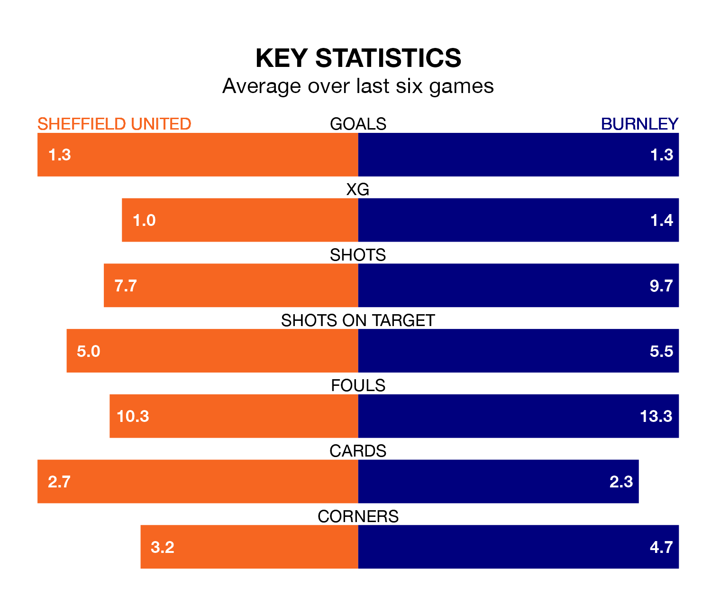

Saturday's match at Bramall Lane sees the league's two bottom sides face each other, as rock-bottom Sheffield United host Burnley.
United have picked up 16 points from their first 16 Premier League games, with three wins and seven draws.
That is four points less than the Clarets have collected, having won four and drawn eight.
United are in bad form in the Premier League, with no wins and three draws from their last six games.
With a win and four draws over that period, Burnley's form is better – they have taken seven points from 18, compared to the Blades's three.
In the last 10 years, United and Burnley have played each other on eight occasions. They won three each, and they drew twice.
On average, the Blades scored 1.4 goals and the Clarets 1.5 in those matches.
Their last meeting was on December 2, when Burnley won 5-0 at home.
With 30 goals in 32 games so far this season, the home side are the league's lowest scorers with 0.9 goals per game. And they are conceding more than average, letting in 84 goals at a rate of 2.6 per game.
The Clarets are also below average scorers, with 1.0 goal per game, compared to a league average of 1.6. They have conceded 2.1 goals per game.
United's last match was on April 13, a 2-0 loss against Brentford.
Burnley drew 1-1 with Brighton and Hove Albion last time out, also on April 13, with Josh Brownhill on the scoresheet.
Saturday's match will be refereed by Anthony Taylor, who has taken charge of 22 Premier League games so far this season, issuing three red cards and booking 112 players. He has awarded 12 penalties.
The last United game Taylor refereed was a 2-2 away draw with AFC Bournemouth on March 9. His last Burnley match was their 2-0 loss at home against Everton on December 16.
Updated: 15:40 (UTC), 18/04/24